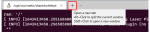
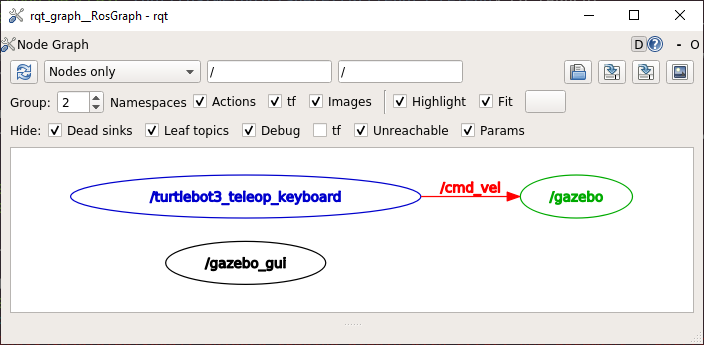
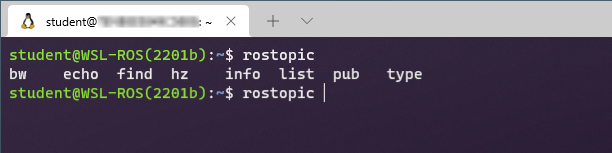
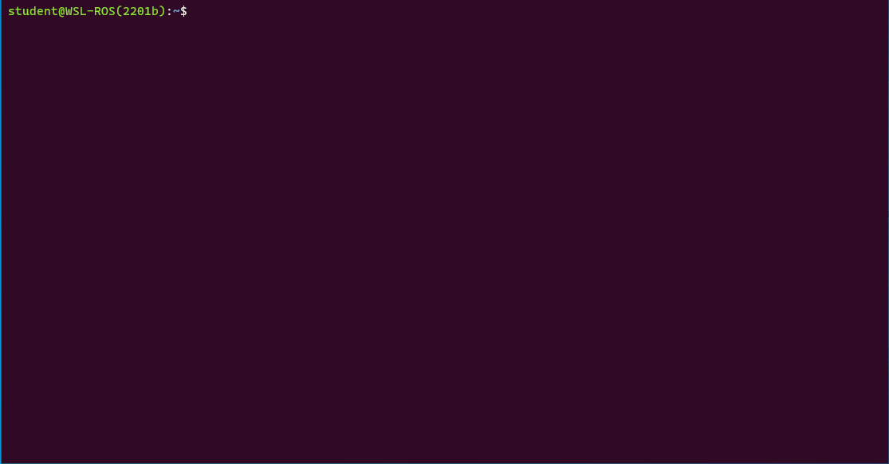
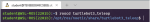

In the first part of this lab course you will learn the basics of ROS and become familiar with some key tools and principles of the framework which will allow you to program robots and work with ROS applications effectively. For the most part, you will interact with ROS using the Linux command line and so you will also become familiar with some key Linux command line tools that will help you. Finally, you will learn how to create some basic ROS Nodes using Python and get a taste of how ROS topics and messages work.
Exercise 1: Launching a simulation and making a ROS robot move¶
If you haven't done so already, launch your WSL-ROS environment by running the WSL-ROS shortcut in the Windows Start Menu (see here for detailed instructions). This should open up a terminal application and an Ubuntu terminal instance. We'll refer to this terminal instance as TERMINAL 1.
In the terminal enter the following command to launch a simulation of a TurtleBot3 Waffle in an empty world:
A Gazebo simulation window should open and within this you should see a TurtleBot3 Waffle (very similar to our real robots):
With your Gazebo Simulation up and running, return to the terminal application and open up a new Ubuntu terminal instance (TERMINAL 2) by pressing the New Tab button:

(or, alternatively, press the Ctrl+Shift+T keyboard shortcut).
In the new terminal instance enter the following command:
TERMINAL 2:
rosrunturtlebot3_teleopturtlebot3_teleop_key
Follow the instructions provided in the terminal to drive the robot around using specific buttons on your keyboard:
These two commands have a similar structure, but work slightly differently.
The first command you used was a roslaunch command, which has the following two parts to it (after the roslaunch bit):
roslaunch{[1]Packagename}{[2]Launchfile}
Part [1] specifies the name of the ROS package containing the functionality that we want to execute. Part [2] is a file within that package that tells ROS exactly what scripts ('nodes') that we want to launch. We can launch multiple nodes at the same time from a single launch file.
The second command was a rosrun command, which has a structure similar to roslaunch:
rosrun{[1]Packagename}{[2]Nodename}
Here, Part [1] is the same as the roslaunch command, but Part [2] is slightly different: {[2] Node name}. Here we are directly specifying a single script that we want to execute. We therefore use rosrun if we only want to launch a single node on the ROS network (turtlebot3_teleop_key in this case, which is a Python script).
ROS applications are organised into packages. Packages are basically folders containing scripts, configurations and launch files (ways to launch those scripts and configurations), all of which relate to some common robot functionality. ROS uses packages as a way to organise all the programs running on a robot.
Info
The package system is a fundamental concept in ROS and all ROS programs are organised in this way.
You will create a number of packages throughout this course, each containing different nodes, launch files and other things too. We'll start to explore this later on in this part of the course.
ROS Nodes are executable programs that perform specific robot tasks and operations. Earlier on we used rosrun to launch a node called turtlebot3_teleop_key, which allowed us to remotely control (or "teleoperate") the robot, for example.
Question
What was the name of the ROS package that contained the turtlebot3_teleop_key node? (Remember: rosrun {[1] Package name} {[2] Node name})
A ROS Robot might have hundreds of individual nodes running simultaneously to carry out all its necessary operations and actions. Each node runs independently, but uses ROS communication methods to communicate and share data with the other nodes on the ROS Network.
You should currently have two terminal windows active: the first in which you launched the Gazebo simulation (TERMINAL 1) and the second with your turtlebot3_teleop_key node active (TERMINAL 2).
Open up a new terminal instance now (TERMINAL 3).
Use the following command to have a look at which nodes are currently active on the network:
We can visualise the connections between the active nodes by using the rqt_graph node within the rqt_graph package. We can use rosrun to launch this node directly (you might see some error messages when you do this, but don't worry about them):
TERMINAL 3:
rosrunrqt_graphrqt_graph
A new window should then open, displaying something similar to the following (hover over the diagram to enable colour highlighting):

This tool shows us that the /turtlebot3_teleop_keyboard and /gazebo nodes are communicating with one another. The direction of the arrow tells us that the /turtlebot3_teleop_keyboard node is a Publisher and the /gazebo node is a Subscriber. The two nodes communicate via a ROS Topic, in this case the /cmd_vel topic, and on this topic the /turtlebot3_teleop_keyboard node publishes messages.
Publishers and Subscribers: A ROS Communication Method¶
ROS Topics are key to making things happen on a robot. Nodes can publish (write) and/or subscribe to (read) ROS Topics in order to share data around the ROS network. Data is published to topics using ROS Messages. We were actually publishing messages to a topic when we made the robot move using the turtlebot3_teleop_key node previously.
This confirms what we discovered earlier about the publisher(s) and subscriber(s) to the /cmd_vel topic. In addition, this also tells us the topic type, or the type of message that is being published on this topic.
Overall, the output above tells us the following:
The /turtlebot3_teleop_keyboard node is currently publishing (i.e. writing data) to the /cmd_vel topic, confirming what we saw from the rqt_graph node before.
The /gazebo node is subscribing to the topic. This node is the Gazebo application that's running the simulation of the robot. The node therefore monitors (i.e. subscribes to) the /cmd_vel topic and makes the robot move in the simulator whenever a velocity command is published.
The type of message used by the /cmd_vel topic is called: geometry_msgs/Twist.
The message type has two parts: geometry_msgs and Twist. geometry_msgs is the name of the ROS package that this message belongs to and Twist is the actual message type.
We have just learnt then, that if we want to make the robot move we need to publish Twist messages to the /cmd_vel topic.
We can use the rosmsgROS command to provide further information about this message, or any other message that we may be interested in:
TERMINAL 4:
rosmsginfogeometry_msgs/Twist
From this, we should obtain the following:
geometry_msgs/Vector3 linear
float64 x
float64 y
float64 z
geometry_msgs/Vector3 angular
float64 x
float64 y
float64 z
We'll learn more about what this means in Part 2.
To finish, enter Ctrl+C in each of the three terminals that should currently have ROS processes running (Terminals 1, 2 and 3). The associated Gazebo and RQT Graph windows should close as a result of this too.
Tip
Whenever you need to stop any ROS process use Ctrl+C in the terminal it's running in.
In a minute or two you will create some simple publisher and subscriber nodes in Python and send messages between them. As we learnt earlier though, ROS applications must be created within packages, and so we need to create a package first in order to start creating our own ROS nodes.
ROS provides a tool to create a new ROS package and ensure that all the essential elements are present: catkin_create_pkg.
It's important to work in a specific filesystem location when we create and work on our own ROS packages, so that ROS can access and build everything appropriately. These spaces are called "Catkin Workspaces" and one has already been created in the WSL-ROS environment, called catkin_ws1:
/home/student/catkin_ws/
Or:
~/catkin_ws/
Note
~ is an alias for your home directory. So cd ~/catkin_ws/ is the same as typing cd /home/student/catkin_ws/ (in WSL-ROS, the default user is student).
Navigate to the catkin_ws folder by using the Linux cd command (change directory). In TERMINAL 1 enter the following:
TERMINAL 1:
cd~/catkin_ws/
Inside the catkin workspace there is a directory called src. All new packages need to be located in the src folder, so we need to be here when we use the catkin_create_pkg tool to create a new package. So, use the cd command again to navigate into the catkin_ws/src folder:
TERMINAL 1:
cdsrc
Now, use the catkin_create_pkg script to create a new package called part1_pubsub, and define rospy and std_msgs as dependencies:
TERMINAL 1:
catkin_create_pkgpart1_pubsubrospystd_msgs
Question
What did the catkin_create_pkg tool just do? (Hint: there were four things, and it will have told you about them!)
Navigate into this new package directory.
ls is a Linux command which lists the contents of the current directory. Use ls to list the content of the part1_pubsub directory, as created by the catkin_create_pkg tool.
Catkin packages are typically organised in the following way, and have a few essential features that must be present in order for the package to be valid:
package_folder/ -- All packages must be self-contained within their own root folder [essential]
|-launch/ -- A folder for launch files (optional)
|-src/ -- A folder for source files (python scripts etc)
|-CMakeLists.txt -- Rules for compiling the package [essential]
`-package.xml -- Information about the package [essential]
You will have noticed that the catkin_create_pkg tool made sure that the essential features of a Catkin Package were created when we asked it to build the part1_pubsub package above.
Before we do anything else, it's good practice to now run CMake on the package (using catkin build) to register it on our ROS system and make sure there are no errors with its definition so far:
TERMINAL 1:
catkinbuildpart1_pubsub
Finally, "re-source" your environment2 using the following command:
source~/.bashrc
... and you're good to go.
Warning
You will need run source~/.bashrc in any other terminals that you have open too, in order for the changes to propagate through to these as well!
Within your part1_pubsub package directory, navigate to the src folder using the cd command.
touch is a Linux command that we can use to create an empty file. Use this to create an empty file called publisher.py, which we will add content to shortly:
TERMINAL 1:
touchpublisher.py
Use ls to verify that the file has been created, but use the -l option with this, so that the command provides its output in "a long listing format":
TERMINAL 1:
ls-l
This should output something similar to the following:
This confirms that the file exists, and the 0 in the middle of the bottom line there indicates that the file is empty (i.e. its current size is 0 bytes), which is what we'd expect.
We therefore now need to open the file and add content to it. As discussed in the WSL-ROS Section, we'll be using Visual Studio Code as our IDE for this work. It's important to launch this in a very specific way in order for it to work properly with the WSL-ROS environment, so follow the instructions here to get this up and running now.
Using the VS Code File Explorer, navigate to your part1_pubsub package directory (~/catkin_ws/src/part1_pubsub/), locate the publisher.py file that you have just created in the /part1_pubsub/src/ folder and click on the file to open it.
It's important that you understand how this code works, so make sure that you read the annotations!
Make sure that you've saved the publisher.py file (in VS Code) before trying to run it!
Do this by using the Ctrl+S keyboard shortcut, or going to File > Save from the menu at the top of the VS Code screen.
We can now run this node using the rosrunROS command. However, because we closed everything down earlier on, the ROS Master is no longer active. First then, we need to re-launch it manually using roscore:
TERMINAL 1:
roscore
Then, in TERMINAL 2, use rosrun to execute the publisher.py script that you have just created by providing the relevant information to the rosrun command. Remember: rosrun {package name} {script name}, so:
TERMINAL 2:
rosrunpart1_pubsubpublisher.py
... Hmmm, something not quite right? If you typed the command exactly as above and then tried to run it, you probably just received the following error:
[rosrun] Couldn't find executable named publisher.py below /home/student/catkin_ws/src/part1_pubsub
[rosrun] Found the following, but they're either not files,
[rosrun] or not executable:
[rosrun] /home/student/catkin_ws/src/part1_pubsub/src/publisher.py
The clue there is the word "executable". When we create a file, using touch it is given certain permissions. Run ls -l again (making sure that your terminal is in the right location: ~/catkin_ws/src/part1_pubsub/src/).
The first bit tells us about the permissions that are currently set: -rw-r--r--. This tells us who has permission to do what with this file and (currently) the first bit: -rw-, tells us that we (as the user student) have permission to Read or Write to it. There is a third option we can set too though, which is the execute permission, and we can set this using the chmodLinux command...
Run the chmod command as follows:
TERMINAL 2:
chmod+xpublisher.py
Now, run ls -l again to see what has changed:
TERMINAL 2:
ls-l
We have now granted permission for the file to be eXecuted too:
OK, now use rosrun again to (hopefully!) run the publisher.py node (remember: rosrun {package name} {script name}).
If you see a message in the terminal similar to the following then the node has been launched successfully:
[INFO] [#####]: The 'simple_publisher' node is active...
Phew!
We can further verify that our publisher node is running using a number of different tools. Try running the following commands in TERMINAL 3:
rosnode list: This will provide a list of all the nodes that are currently active on the system. Verify that the name of our publisher node is visible in this list.
rostopic list: This will provide a list of the topics that are currently being used by nodes on the system. Verify that the name of the topic that our publisher is publishing messages to is present within this list.
So far we have used the rostopic ROS command with two additional arguments:
list: to provide us with a list of all the topics that are active on our ROS system, and
info: to provide us with information on a particular topic of interest.
We can use the autocomplete functionality of the Linux terminal to provide us with a list of all the available options that we can use with the rostopic command. To do this you can type rostopic followed by a Space and then press the Tab key twice:
rostopic[SPACE][TAB][TAB]
You should then be presented with a list of the available arguments for the rostopic command:

rostopic hz {topic name} provides information on the frequency (in Hz) at which messages are being published to a topic:
rostopichz/chatter
This should tell us that our publisher node is publishing messages to the /chatter topic at (or close to) 10 Hz, which is exactly what we ask for in the publisher.py file (in the __init__ part of our Publisher class). Enter Ctrl+C to stop this command.
rostopic echo {topic name} shows the messages being published to a topic:
rostopicecho/chatter
This will provide a live stream of the messages that our publisher.py node is publishing to the /chatter topic. Enter Ctrl+C to stop this.
We can see some additional options for this command by viewing the help documentation:
rostopicecho-h
From here, for instance, we can learn that if we just wanted the echo command to display a set number of messages from the /chatter topic we could use the -n option. To display the most recent two messages only, for example:
You will now create another node to subscribe to the topic that our publisher node is broadcasting messages to, to illustrate how information can be passed from one node to another, via topic messages.
In TERMINAL 3 use the filesystem commands that were introduced earlier (cd, ls and roscd) to navigate to the src folder of your part1_pubsub package.
Use the same procedure as before to create a new empty Python file called subscriber.py and remember to make it executable!
Then, open the newly created subscriber.py file in VS Code, paste in the code here and save it. Once again, it's important that you understand how this code works, so make sure you read the code annotations!
Use rosrun to execute your newly created subscriber.py node (remember: rosrun {package name} {script name}). If your publisher and subscriber nodes are working correctly you should see an output like this:

As before, we can find out what nodes are running on our system by using the rosnode list command. Run this in TERMINAL 4 and see if you can identify the nodes that you have just launched.
Finally, close down your publisher and subscriber nodes and the ROS Master by entering Ctrl+C in Terminals 1, 2 and 3.
Advanced:
You've now created a publisher and subscriber, both of which were able to communicate with one another over the /chatter topic, using the Stringstandard ROS message type. This message is provided, by ROS, as part of the std_msgs package, but there are other simple message types within this package that we can use too to pass data around a ROS network too, one of which is Float64.
How could you adapt your publisher and subscriber nodes to use the Float64 message type, instead of String?
At the beginning of this session we launched the Gazebo Simulation of our robot using a launch file and the roslaunch command. This provides a means to launch multiple ROS nodes simultaneously, and we will demonstrate this by building a launch file for the publisher and subscriber nodes that we created in the previous exercises. Launch files must be located within a package, so first let's have a look at a package that already exists, and explore the launch file within it.
Exercise 7: Exploring a ROS Package and Launch File¶
We launched the turtlebot3_teleop_key node earlier using rosrun, but there's also a way to launch this using a launch file. To investigate this, we need to look inside the package within which the turtlebot3_teleop_key node exists.
We launched the turtlebot3_teleop_key node with rosrun as follows: rosrun turtlebot3_teleop turtlebot3_teleop_key, which means that the node is located within a package called turtlebot3_teleop. roscd is a ROS command that allows us to navigate to the directory of any ROS package installed on our system, without us needing to know the path to the package beforehand.
In TERMINAL 3 use the roscd command to navigate to the turtlebot3_teleop package directory on the Linux filesystem:
TERMINAL 3:
roscdturtlebot3_teleop
The terminal prompt should have changed to illustrate where on the filesystem the roscd command has just taken you:

pwd is a Linux command which tells us the current filesystem location of our terminal. Enter this command to confirm what the terminal prompt has told us.
So, now we know where the turtlebot3_teleop package is located on our machine, and we can then use more Linux commands to explore this further:
Use ls to list the contents of the turtlebot3_teleop package directory. ls on its own will simply list the items in the current directory, try this first.
Then, use the -F option to find out a little more:
TERMINAL 3:
ls-F
You will notice that the output has now changed slightly: items followed by a / are folders (aka "directories") and items without the / are files (files will often have a file extension too).
Questions
How many items were there in the turtlebot3_teleop package directory?
How many of these were directories and how many were files?
Launch files for a package should be located in a launch folder within the package directory. Did you notice a launch folder in the output of the ls command above?
Use the cd command to navigate into the turtlebot3_teleop package launch folder and then use ls again to see what's in there.
In this folder you should see a turtlebot3_teleop_key.launch file. We'll now have a look at the contents of this file...
cat is a Linux command that we can use to display the contents of a file in the terminal. Use this to display the contents of the turtlebot3_teleop_key.launch file.
TERMINAL 3:
catturtlebot3_teleop_key.launch
Question
Knowing what you do now, how would you launch the turtlebot_teleop_key node using roslaunch (instead of rosrun)?
pkg: The name of the ROS package containing the functionality that we want to launch.
type: The full name of the script (i.e. ROS Node) that we want to execute within that package (including the file extension, if it has one).
name: A descriptive name that we want to give to the ROS node, which will be used to register it on the ROS Network.
output: The place where any output from the node will be printed (either screen where the output will be printed to our terminal window, or log where the output will be printed to a log file).
In TERMINAL 1, use roscd to navigate to the root of your part1_pubsub package directory.
Use the Linux mkdir command to make a new directory in the package root folder called launch:
TERMINAL 1:
mkdirlaunch
Use the cd command to enter the launch folder that you just created, then use the touch command (as before) to create a new empty file called pubsub.launch.
Open this launch file in VS Code and enter the following text:
Referring to what we learned about the format of launch files above, replace each {BLANK} above with the correct text to launch the publisher node that you created in Exercise 5.
Use roslaunch to launch this file and test it out as it is (remember: roslaunch {package name} {launch file}). If everything looks OK then carry on to the next step.
The code that we've given you above will launch the publisher.py node, but not the subscriber.py node. Add another <node> tag to your pubsub.launch file to launch the subscriber node as well.
The publisher and subscriber nodes and the ROS Master can now all be launched with the roslaunch command and the pubsub.launch file that you have now created.
Launch this in TERMINAL 1 and then use rosnode list in TERMINAL 2 to check that it all works correctly.
roslaunch can be used to launch multiple nodes on a robot from one single command.
It will also automatically launch the ROS Master (equivalent to running the roscore command manually) if it isn't already running (did you notice that we didn't have to do this manually in Exercise 8, but we did when we launched our nodes individually, using rosrun, in Exercises 6 & 7?)
In the rospy.init(...) functions of our publisher.py and subscriber.py Python scripts, we defined a node name and set anonymous=True. As a result, when we launched our nodes manually using rosrun, the names we defined were honoured, but were appended with a unique combination of numbers.
When we launched our nodes using roslaunch however, the node names were set according to what we had defined in the name field of the <node> tag within the launch file, and anything specified within the rospy.init(...) functions of our Python scripts were overwritten as a result.
In this session we've learnt about some key concepts in ROS, such as Packages; Launch files; Nodes and the Publisher-Subscriber Communication Method using Topics and Messages.
We've learnt how to use some key ROS commands:
roslaunch: to launch multiple ROS Nodes via launch files.
roscd: to navigate to installed ROS packages using a package name alone.
rosnode: to display information about active ROS Nodes.
rosrun: to run executables within a ROS package.
rostopic: to display information about active ROS topics.
rosmsg: to display information about all ROS messages that are available to use in a ROS application.
roscore: to launch the ROS Master: The baseline nodes and programs that are required for ROS to function.
In addition to this we've also learnt how to use catkin_create_pkg, which is a helper script for creating ROS package templates.
We have also learnt how to work in the Linux Terminal and navigate a Linux filesystem using key commands such as:
pwd: prints the path of the current working directory to show you which directory you're currently located in.
ls: lists the files in the current directory.
cd: change directory to move around the file system.
mkdir: make a new directory (mkdir {new_folder}).
cat: show the contents of a file.
chmod: modify file permissions (i.e. to add execute permissions to a file for all users: chmod +x {file}).
touch: create a file without any content.
Finally, we have learnt how to create basic ROS nodes in Python to both publish and subscribe to ROS topics using standard ROS messages.
Remember, the work you have done in the WSL-ROS environment during this session will not be preserved for future sessions or across different University machines automatically! To save the work you have done here today you should now run the following script in any idle WSL-ROS Terminal Instance:
wsl_rosbackup
This will export your home directory to your University U: Drive, allowing you to restore it at the start of the next session.
"The name catkin comes from the tail-shaped flower cluster found on willow trees -- a reference to Willow Garage where catkin was created." (According to ROS.org) ↩